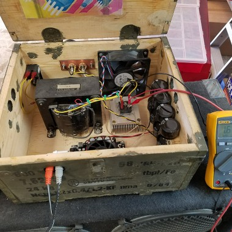

AUTOMATIC MEDICINE DISPENSER AND DISPOSER
An automatic medicine dispenser and disposer is a device designed to help individuals manage their medication regimen
more effectively. It can help ensure that medications are taken on time and in the correct dosages, while also providing
a safe and convenient way to dispose of expired or unused medications.
An automatic medicine dispenser and disposer is a device designed to simplify medication management. The dispenser segment
stores different medications in compartments and is programmed with the user's medication schedule. At the designated times,
it sends alerts to prompt medication intake and dispenses the correct medications. The disposer segment safely disposes of
expired or unused medications. Users input medication information, and the device employs safety measures to prevent accidental
disposal. Once confirmed, the device uses mechanisms to safely dispose of medications, potentially incorporating environmentally
friendly methods. It's essential to remember that while these devices offer convenience, medical advice should always be
prioritized, especially for complex conditions. For the latest developments, checking up-to-date sources is recommended.

|